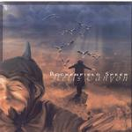
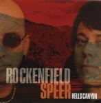

| Artist: | Rockenfield/Speer |
| Title: | Hells Canyon |
| Label: | Rainstorm RS 1233/Bee & Bee Records BBRS2001 |
| Length(s): | 50 minutes |
| Year(s) of release: | 2001 |
| Month of review: | [03/2001] |
| 1) | Descent | 0.33 |
| 2) | Seven Devils | 3.41 |
| 3) | Chant Of The Fathers | 3.09 |
| 4) | Snake Dance | 4.37 |
| 5) | Crossing To Freedom | 3.15 |
| 6) | Coyote | 6.04 |
| 7) | Red Torrent | 4.06 |
| 8) | River Of No Return | 4.55 |
| 9) | China's Last Stand | 4.44 |
| 10) | Buffalo Eddy | 4.14 |
| 11) | Carved In Stone | 6.13 |
Bonustrack on the Bee & Bee Records pressing:
| 12) | Epilogue | 5.19 |
Chant Of The Fathers is in the same style, but with a darker guitar sound, a better melody and something I would indeed typify as the Chant Of The Fathers, low sounding voices in a choir. A bit tribal. Again, the song is short, compact and has quite a lot of repetition. The music is continually varied though.
Snake Dance is quite a percussive piece and at first I'm reminded of older Patrick O'Hearn material. But then the music becomes more up-beat, although on the whole it is the most relaxed, meditative piece so far, based on a catchy tune.
After Crossing To Freedom we come to the dark spooky Coyote. Again the empty spaces of the U.S. are evoked in this driven dark track which has a powerful theme propping up once in a while.
Red Torrent opens with percussion and fast bass playing. A catchy track is what follows in which I hear some echoes from the past (unfortunately I can not tell you whom's past). The track also has plenty of breaks so that the music obtains a more "jammed" character. River Of No Return has spaceous guitars, a bass bubbling under and like most of the tracks here a strongly repetitive character.
China's Last Stand has a subtle weirdness in its stereo effect, a bit as if the recorder was wobbling all the time. A relaxed soothing piece with a lonesomely sounding guitar. Again, good melodic material, but I do get the impression that the duo could have done more with it, it all tends to linger around a bit. The oohaahs from the keyboards give the music a slight Enigma flavour.
Buffalo Eddy is a bluesy flavoured style, but still in the fashion of the rest of the album. Carved In Stone is somewhat aggressive and strongly percussive, with them nice rolling drums. It does sound a bit sharper than the other tracks, especially in the beginning.
The European bonus track is called Epilogue. A low, audible bass and a open jazzrockish slight spacey sound conclude the album.
